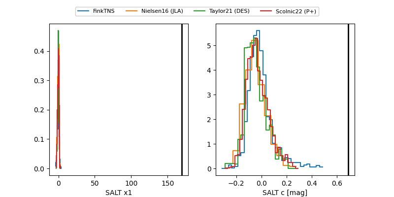

FINK: ZTF25abqjaag
Lasair: ZTF25abqjaag
ALeRCE: ZTF25abqjaag
ZTF25abqjaag (ztf,fink)
equatorial (ra, dec) = (302.8582,+48.79134)
galactic (l, b) = (84.2158,+8.19369)

last atlasc=18.73, atlaso=18.83, ztfg=19.70, ztfr=19.42
1 atlasc, 3 atlaso, 3 ztfg, 3 ztfr detections